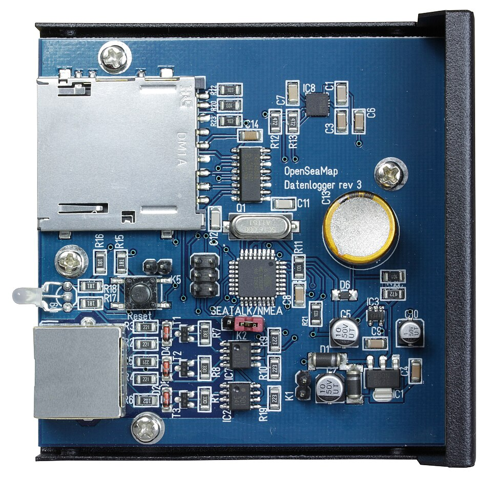
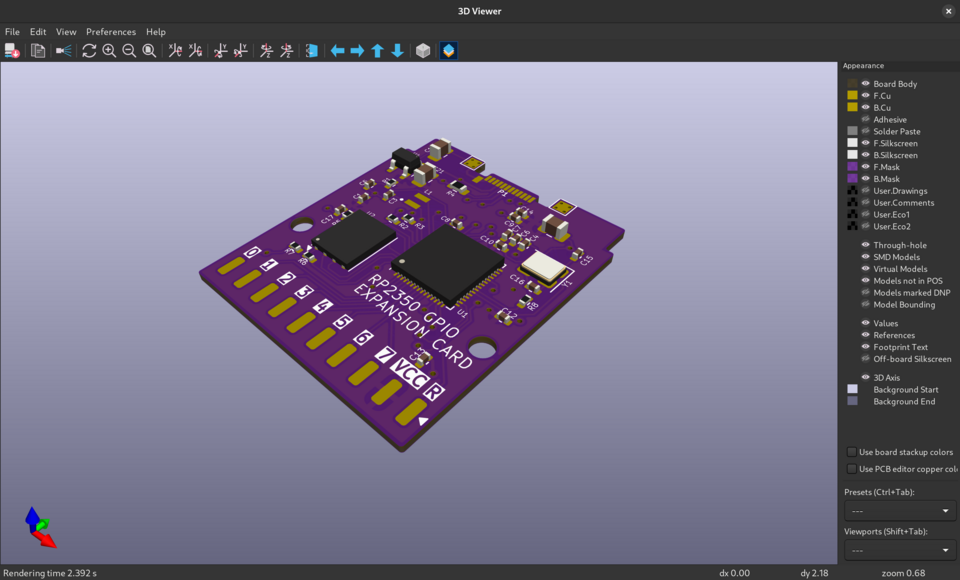

PCB return paths, decoupling and EMC
A schematic line has no length. Copper tracks do, and that matters when a circuit switches fast or carries a large current.
Every current has a return path
A loop includes both the outgoing conductor and the return. At high frequency the return tends to flow close to the signal on a nearby reference plane to reduce loop inductance. A gap in that plane can force a longer return and increase coupling. Treat the geometry as part of the circuit.

Photo by Hotelsierra1, scaled for the course. Original · CC BY-SA 3.0.


Image by VectorVoyager, scaled for the course. Original · CC BY-SA 4.0.

Watch on YouTube · Find the footprints and their connections in the layout. Make room for your probe points before routing. KiCad 9.0 – Getting Started Part 6- Laying Out Your First PCB | DigiKey · DigiKey.
Keep switching current close to its source
A local decoupling capacitor supplies fast changes in current at a device. Its effective path includes pad, trace, via and plane. Position and loop area matter along with capacitance. For a rough ideal estimate, a 10 mA increase lasting 100 ns moves 1 nC. An ideal 100 nF capacitor would drop 10 mV. Real inductance and resistance add to the transient.
A clock can have a low repetition rate yet fast edges, which contain high-frequency energy. A scope probe’s long ground clip can also add loop inductance. Compare with the instrument’s documented short-ground attachment on safe nodes before claiming a board fault.
Work out how the disturbance reaches the input
| Path | Physical effect | Comparison |
|---|---|---|
| Shared return | Load current creates a voltage across the same resistance and inductance used as the sensor reference. | Measure sensor ground relative to the receiver ground while the load changes. Compare with the measurement made at the sensor. |
| Electric-field coupling | A changing aggressor voltage pushes current through stray capacitance into a nearby high-impedance input. | Compare separated routing with long parallel routing under the same load. Verify the receiver waveform as well as counts. |
| Magnetic coupling | A changing aggressor current couples into a nearby loop. The victim loop catches more flux when its conductor and return are separated. | Change the victim loop geometry and repeat at the same switching conditions. |
A shared 0.12 Ω path drops 96 mV at 0.80 A. Its inductance matters during a fast transition. A 0.20 A rise in 100 ns through 25 nH contributes 50 mV from L di/dt during that edge. These example drops depend on timing, probe reference and where the load current actually flows. Trace the source, return and receiver before altering grounding.
Check whether cable capacitance erases a pulse
For an open-drain training output, model the high transition as a resistor charging capacitance from near zero. With 4.7 kΩ and 150 pF, the time constant is 0.705 µs and a theoretical 70% threshold is reached in about 0.85 µs. At 700 pF, it takes about 3.96 µs. A 2 µs high pulse can disappear at the receiver even while the source is generating every pulse. The real threshold and edge-rate limits come from the part documentation. Check low-state sink current before changing the pull-up resistor.
Hysteresis uses different rising and falling thresholds and reduces repeated crossings near a noisy switching point. It still requires the pulse to reach the proper threshold. A differential sensor interface measures the voltage between its paired conductors, subject to the receiver’s common-mode range and specified termination. Check sensor output type and receiver compatibility before substituting interfaces. Texas Instruments · Understanding Schmitt triggers · P154 · Diagnose missed and extra encoder pulses.
Design access before assembly
Leave space for a ground probe beside important test points. Use polarity and connector labels that can be read after the wires are installed. Keep switch-node copper compact on a converter according to its vendor layout example. Measure rail voltage and noise at a repeatable point. EMC performance still requires suitable emissions and immunity tests for the finished product. KiCad layout walkthrough · Analog Devices · Decoupling techniques.